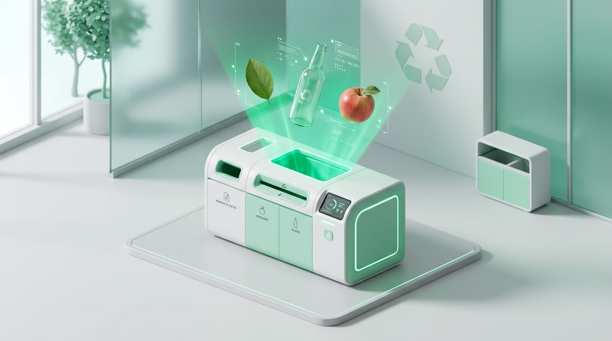
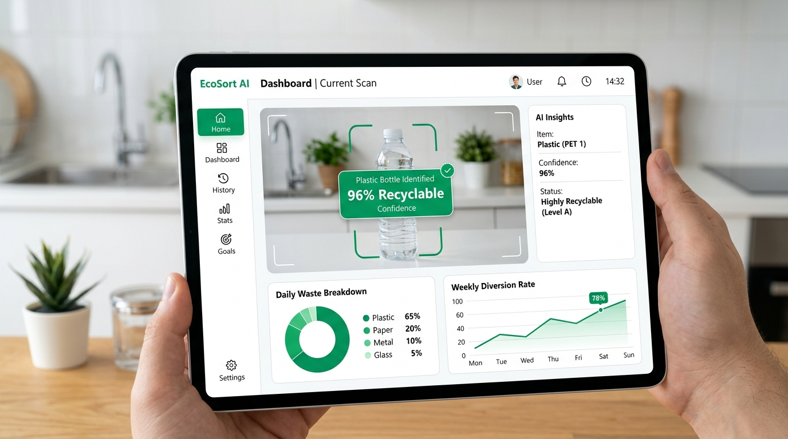

Sort Waste Smarter with AI
Automating recyclable and organic waste segregation in real-time. Powered by a custom Convolutional Neural Network (CNN) to divert garbage from landfills and empower the circular economy.

About the Project
Every year, over 2.1 billion tons of municipal solid waste is generated globally. Why waste segregation matters and how EcoSort addresses this critical bottleneck.
The Segregation Dilemma
When organic food scraps mix with plastics, cardboard, and metals, the entire batch gets contaminated. Over 80% of potentially recyclable material ends up dumped in open landfills or incinerators, releasing massive methane emissions and polluting local soil.
- Contaminated recycling batches rejected at processing facilities
- High manual labor costs and biohazard risks for municipal workers
- Decomposition in landfills creating severe greenhouse emissions
What EcoSort Solves
EcoSort is an automated computer vision intelligence system that accurately recognizes the material category of discarded items at the point of disposal. By providing instant binary classification into Organic and Recyclable, it enables both intelligent public bins and sorting conveyors.
- Sub-50ms instant visual decision making at point of disposal
- Robust to varying angles, lighting, deformities, and crushing
- Clean segregation pipelines that boost recycling yield up to 3x
Preventing compostable organics from rotting anaerobically in landfills.
Eliminating organic grease contamination from paper and plastic streams.
Lightweight CNN footprint ready for IoT smart bins, mobile apps, or cloud APIs.
How It Works
From raw camera capture to real-time classification in 4 seamless stages.
Upload Image
A high-resolution image is captured via phone camera, conveyor optical sensor, or file upload in any common format (JPEG, PNG, WebP).
Preprocess
OpenCV resizes the frame to 224 × 224 pixels, normalizes RGB channels to [0.0, 1.0], and applies data augmentation and color balancing.
CNN Predicts
Convolutional layers extract spatial textures, edges, and material reflections, followed by MaxPooling and dense layers computing softmax probability.
Result Shown
Instantly labeled as Recyclable (R) or Organic (O) with confidence score, recycling bin guide, and environmental impact.
Try EcoSort in Action
Upload your own photo or pick from real-world samples below to see the CNN model detect and classify waste in real time.
Select or Upload Scene
Multi-Object AI DetectorMulti-Particle Detection Viewport
Latency: 42msItem Inspection: Plastic Bottle Cap
5 Waste Objects Located & Identified
Individual waste items separated and classified one-by-oneRinse plastic bottle, cap, and aluminium can to remove residues. Squash to save bin capacity.
Place banana peel and apple core directly into composting or wet-waste receptacle. 100% biodegradable.
EcoSort Mobile & Smart Bin Dashboard
Designed for real-world deployment on tablets, mobile edge devices, and municipal conveyor consoles.

Model Architecture & Training Setup
A tailored Convolutional Neural Network designed for high classification accuracy while preserving ultra-low inference latency for edge deployment.
Convolutional Neural Network Pipeline
Click any layer block below to inspect its receptive field, filters, output dimensions, and activation function.
Receives preprocessed RGB images normalized from [0, 255] to [0.0, 1.0]. Represents the primary perceptual input into the convolutional feature extraction pipeline.
How Deep Learning & CNNs Locate, Name, and Segregate Waste One-by-One
An end-to-end mathematical and architectural breakdown of how our computer vision pipeline identifies individual items like banana peels and plastic bottle caps.
Feature Extraction Hierarchies
As image pixels pass through successive Conv2D kernels (3×3), the neural network learns hierarchical spatial representations:
- Early Layers (Conv1): Detect elementary gradients, circular edge curvature (e.g. bottle cap circumference), and contrast transitions.
- Middle Layers (Conv2): Map surface textures—specular gloss on PET plastic, ribbed treads on caps, and enzyme bruising on banana peels.
- Deeper Layers (Conv3): Assemble semantic object abstractions, distinguishing an eaten apple core from an aluminium beverage can.
Spatial Localization & Bounding Boxes
To pinpoint where each item is located in a mixed scene, the CNN uses an anchor-based detection head and spatial feature maps:
- Receptive Field Grids: The feature tensor preserves 2D spatial coordinates relative to the input frame.
- Bounding Box Regression ($L_{reg}$): Predicts bounding coordinates $[x_{min}, y_{min}, x_{max}, y_{max}]$ surrounding each particle.
- Non-Maximum Suppression (NMS): Filters redundant candidate boxes with an IoU threshold of 0.45, ensuring each waste item is bounded by a single clean frame.
Fine-Grained Classification Head
Extracted feature vectors are routed through fully connected dense layers with Softmax activation to determine fine-grained object labels:
P(Class i | x) = exp(z_i) / Σ exp(z_j)
This outputs specific granular names (e.g., Plastic Bottle Cap, Banana Peel, Crushed Can) before mapping to the primary stream: Recyclable (Blue) or Organic (Green).
Sequential Physical Segregation Actuation
Once particles are identified and located, the deep learning model interfaces with edge microcontrollers (Raspberry Pi / Jetson) to physically sort each item:
- Spatial Coordinate Queue: Items on the conveyor belt are assigned sequential timestamps Δt = d / v_belt.
- IoT Actuation Pulses: High-speed optical air-ejectors or robotic delta arms trigger at the exact coordinate (x_i, y_i).
- Zero-Contamination Routing: Directs plastic caps and bottles to the blue recycling chute, and food scraps to the green organic compost hopper one-by-one.
Results & Evaluation
Evaluating model accuracy, precision, recall, and convergence stability across unseen test sets.
Model Training & Confusion Matrix
Explore accuracy convergence curves and category classification distribution.
| Predicted Organic (O) | Predicted Recyclable (R) | Class Recall | |
|---|---|---|---|
| Actual Organic (O) | 1,195 95.1% | 61 4.9% | 95.1% |
| Actual Recyclable (R) | 74 5.9% | 1,177 94.1% | 94.1% |
Built with Proven Technologies
An end-to-end modern stack designed for reproducible data science, deep learning research, and low-latency computer vision.
Python 3.10+
Core LanguageThe industry lingua franca powering data pipelines, tensor manipulation, and high-performance machine learning workflows.
TensorFlow / Keras
Deep LearningHigh-level API for crafting convolutional architectures, managing automated backpropagation, and serializing weights to TFLite format.
OpenCV (cv2)
Computer VisionRapid image preprocessing, real-time webcam frame acquisition, resizing, CLAHE contrast tuning, and contour segmentation.
Google Colab
Cloud GPU TrainingHardware-accelerated environment with cloud NVIDIA T4 GPUs for rapid experiment tracking and reproducible notebook sharing.
NumPy & Pandas
Data ScienceVectorized array operations, matrix batch reshaping, and dataset directory balancing for consistent class representation.
Matplotlib & Seaborn
DiagnosticsGenerates loss convergence plots, confusion matrices, ROC-AUC diagnostic curves, and feature map activation visuals.
Future Scope & Innovations
Expanding from binary proof-of-concept to ubiquitous commercial smart infrastructure.
Multi-Class Waste Segmentation
Transitioning from binary (Organic vs Recyclable) to a granular 6-stream classification model: Glass, PET Plastics, Paper & Cardboard, Aluminium/Metals, Compost, and E-Waste/Batteries.
EcoSort Mobile (iOS & Android)
A Flutter citizen application with quantized TensorFlow Lite on-device inference. Users point their smartphone camera at any item offline, receive sorting guidelines, and earn eco-points for proper disposal.
Autonomous Smart Bin IoT
Deploying EcoSort to edge microcontrollers (Raspberry Pi 5 / NVIDIA Jetson Nano) integrated with ultrasonic fullness sensors and motorized servo trapdoors for automated touchless physical sorting in campuses and airports.
Team & Get in Touch
Crafted with passion for Artificial Intelligence and Environmental Sustainability. Connect with us or explore the open-source repository.
Send Us a Message
Interested in collaborating, testing our pre-trained model weights, or deploying EcoSort in your institution? Drop a message!